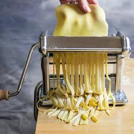

Homemade Pasta Noodles Recipe

Description
This homemade pasta noodle recipe is a gateway to the authentic tastes and textures of traditional Italian cuisine.
With just a few basic ingredients—flour, eggs, salt, and a touch of olive oil—you can create silky, tender noodles that are infinitely better than store-bought varieties.
This recipe encourages you to engage hands-on, from forming the dough to rolling it out and slicing it into your desired pasta shape.
Whether you choose to craft delicate spaghetti or broad fettuccine, the result is a deeply satisfying dish that pairs beautifully with any sauce.
Perfect for a family dinner or a special occasion, making pasta from scratch using this easy recipe is a delightful experience that elevates the simple pleasure of dining into something truly special.
Ingredients:
- 2 cups all-purpose flour, plus extra for dusting
- 3 large eggs
- 1/2 teaspoon salt
- 1 tablespoon olive oil (optional)
Steps:
-
Prepare the Dough:
- Place the flour on a clean, flat surface and make a well in the center.
- Crack the eggs into the well and add the salt and olive oil.
- Using a fork, gently beat the eggs and begin to incorporate the flour starting from the inner rim of
the well.
-
Knead the Dough:
- As the dough starts to come together, use your hands to form it into a rough ball.
- Knead the dough for about 8-10 minutes until it is smooth and elastic. Add a little flour if the
dough is too sticky.
-
Rest the Dough:
- Wrap the dough in plastic wrap and let it rest at room temperature for at least 30 minutes. This
helps the gluten relax and makes the dough easier to roll out.
-
Roll and Cut the Pasta:
- After resting, divide the dough into four pieces. Keep the pieces you are not working with covered
to prevent them from drying out.
- Flatten one piece of dough into a rectangular shape and begin rolling it out on a lightly floured
surface. You can use a pasta machine or a rolling pin to roll the dough as thin as possible.
- Once the dough is rolled out, you can cut it into your desired shape (e.g., fettuccine, linguine,
or lasagna sheets) using a sharp knife or a pizza cutter.
-
Cook the Pasta:
- Bring a large pot of salted water to a boil.
- Add the pasta and cook for 2-4 minutes, depending on thickness. Fresh pasta cooks much quicker than
store-bought dried pasta.
- Drain the pasta and serve with your favorite sauce.
Tips:
- The dough should be firm and a bit tacky but not sticky. Adjust the flour or add a few drops of water as
needed while kneading.
- For extra flavor, you can add herbs or spices to the flour before mixing in the eggs.
- Fresh pasta can be dried on a rack for a few hours and stored in an airtight container for a couple of days
or frozen for later use.